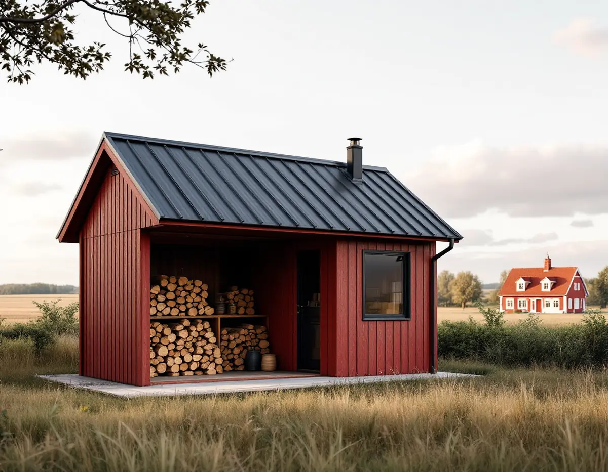
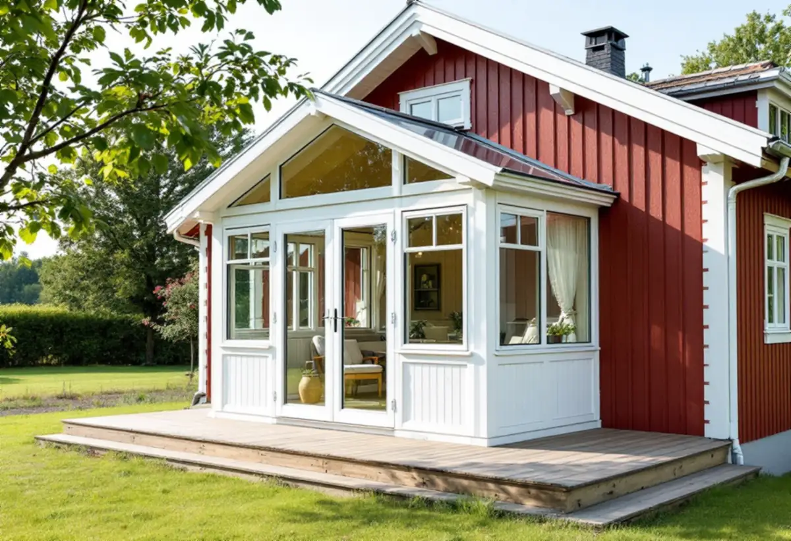

Detaljplan eller inte
Vi ser om tomten ligger inom detaljplan och vad som redan är byggt lovfritt.
Vallentuna är både tätort och landsbygd. Enligt översiktsplanen bor ungefär 5 500 personer utanför tätorterna, i klungor av hus och på enstaka gårdar, och i Garns-Ekskogen finns ett stort område med fritidshus. Det påverkar vad du får bygga utan lov. Geal Entreprenad AB bygger uthus, altaner och uterum och gör snickeri inomhus i hela Vallentuna kommun.

Kommunens sida om nybyggnad av komplementbyggnad räknar upp garage, carport, förråd, gäststuga, vedbod, växthus, bastu och båthus. Byggnaden ska vara ett komplement till bostadshuset och kan inte användas för verksamhet eller som självständig bostad.
Inom detaljplan krävs bygglov om den sammanlagda ytan överstiger 45 kvadratmeter eller en enskild byggnad 30. Utanför detaljplan går gränsen vid 65 respektive 50 kvadratmeter. I ett kulturhistoriskt särskilt värdefullt område krävs bygglov. Installeras vatten, avlopp eller ventilation behövs dessutom anmälan och startbesked, även om byggnaden i sig är lovfri.
En bastu med dusch eller en gäststuga med pentry blir därför oftast ett anmälningsärende, medan en enkel vedbod inte är det. Tidigare friggebodar och attefallshus räknas in i ytan, enligt Boverket.

Enligt kommunens altansida behövs varken lov eller anmälan för ett vanligt trädäck i marknivå. En högre altan till bostadshuset är lovfri om den byggs inom 3,6 meter från huset, är högst 1,8 meter, ligger minst 4,5 meter från gränsen eller har grannarnas skriftliga medgivande och inte ligger i ett särskilt värdefullt område.
En altan som ökar byggnadens volym, eller där utrymmet under kan användas som förråd, räknas som tillbyggnad och kräver bygglov. Är du osäker kan du mejla en måttsatt skiss till kommunen för bedömning. En sådan skiss ritar vi gärna i samband med platsbesöket.
Ett inglasat uterum är enligt kommunen förbundet med ett bostadshus. Det kräver bygglov, men ett uterum på högst 30 kvadratmeter kan vara bygglovsbefriat. Bland de handlingar kommunen begär för ett uterum finns sektionsritning genom huset och uterummet, och om det finns höjdskillnad mellan innergolvet och uterummets golv ska det finnas ramp eller hiss.
Därför lägger vi uterummets golv i samma nivå som rummet innanför när det går, och det styr i sin tur hur bjälklaget och grunden byggs. Enligt Boverket räknas tidigare altaner, skärmtak och attefallstillbyggnader in i de 30 kvadratmetrarna.
Översiktsplanen beskriver att gränsen mellan att bo permanent och att bo i fritidshuset blir allt mer flytande, och att flertalet fritidshusområden har omvandlats sedan 1990-talet. Det största kvarvarande är Garns-Ekskogen i östra delen av kommunen, med cirka 500 bebyggda fastigheter och detaljplaner med byggrätt om 50 kvadratmeter för huvudbyggnad och 20 för komplementbyggnad. I Lövsättra stugby är byggrätten 32 respektive 10 kvadratmeter.
Planen anger att båda områdena ska behålla sin fritidsboendeprägel. Med små byggrätter blir snickeriet inne i huset viktigare: en bättre trappa till loftet, en vägg som flyttas eller en ny ytterdörr kan göra mer nytta än en tillbyggnad.
Landsbygden i Vallentuna kännetecknas enligt översiktsplanen av klungor av bebyggelse och enstaka gårdar intill skogspartier och träddungar, med åker runt byarna. Riktlinjerna säger att ny bebyggelse i första hand ska placeras i anslutning till befintlig bebyggelse och att anslutning till lokal byggnadstradition kan ske med både traditionellt och modernt formspråk. Ett nytt uthus brukar därför smälta in bäst när det står i gårdens grupp av byggnader och inte ute på åkern.
Planen tar också upp en sak som är lätt att missa: inom 250 meter från stamnätsledningar och stationer ska samråd hållas med Svenska kraftnät, även för åtgärder som inte kräver bygglov, som friggebodar, attefallshus och ladugårdar. Ligger tomten nära en stor kraftledning tar vi upp det innan något beställs.
Vi ser om tomten ligger inom detaljplan och vad som redan är byggt lovfritt.
Vi mäter mark, nivåer och avstånd till gräns och går igenom vad du vill bygga.
Du får en måttsatt skiss som kan skickas till kommunen om bedömning behövs.
Arbete och material redovisas på separata rader i ett skriftligt förslag.
Grund, stomme, panel och tak eller trall byggs i den ordning ritningen anger.
Vi går igenom resultatet med dig och lämnar ritningar och underlag att spara.
Hos Skatteverket räknas garage, förråd och andra mindre byggnader till småhuset, men att bygga en ny fristående friggebod, ett garage eller ett växthus ger inget avdrag. En tillbyggnad som ett uterum kan ge avdrag om minst 75 procent av en sida sitter ihop med husets yttervägg och huset är äldre än fem år.
Avdraget är 30 procent av arbetskostnaden, högst 50 000 kr per person och år och högst 75 000 kr tillsammans med rutavdrag. Material och resor ingår inte. Vi drar avdraget direkt på fakturan.
Byggnadens storlek och grund, om den ska ha vatten eller ventilation och hur mycket glas ett uterum får påverkar mest. På landet spelar också åtkomsten till tomten in. Platsbesöket är gratis och du får ett skriftligt kostnadsförslag.
Altan, väggar, dörrar och inredning.
Snickare i Stockholm →Takbyte, takbesiktning och plåtarbeten.
Takläggare i Vallentuna →Villaområden och gårdar.
Takrenovering i Vallentuna →Nytt våtrum, Roslagsvatten och egen brunn.
Badrumsrenovering i Vallentuna →Fritidshus, stationssamhällen och villor i Vallentuna.
Fasadrenovering i Vallentuna →Flygbuller, glasval och lov i Vallentuna.
Fönsterbyte i Vallentuna →Utbyggda kök, villor och gårdar.
Köksrenovering i Vallentuna →Gårdar, fritidshus och villor i Vallentuna.
Målare i Vallentuna →